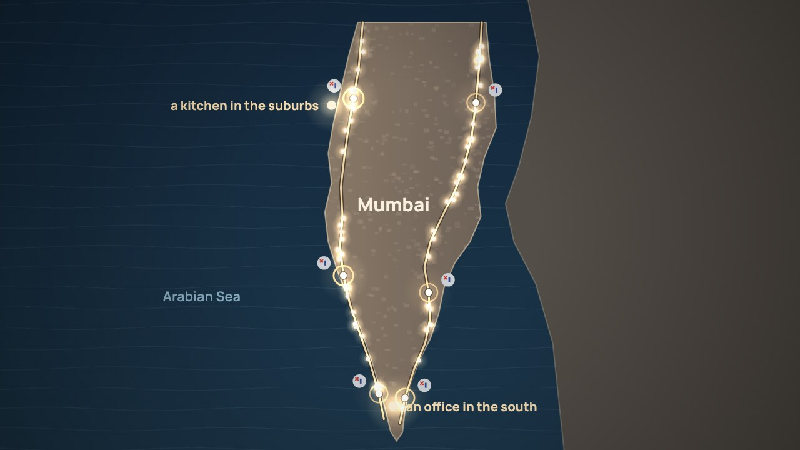
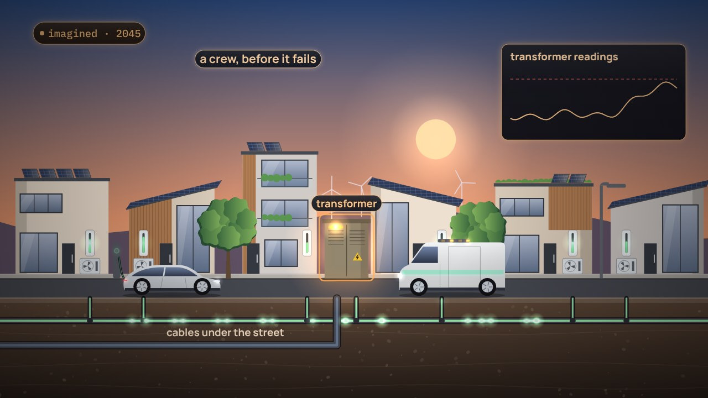

← Anterior · Película 5 de 11
Cómo llega el valor a la gente
Un almuerzo cruza Mumbai, de mano en mano. La luz vuelve a cuarenta casas. El valor desde el lado del cliente, y detalle solo donde importa el orden.
Temas › Arquitectura empresarial › El mapa antes de los datos
Japón funciona con dos frecuencias desde la década de 1890, y en 2011 las convertidoras entre ellas no alcanzaron. Tomás encuentra el mismo borde dentro de la empresa: roles que ocupan personas, socios y un agente de IA, y una palabra, cliente, que para la red es un punto de conexión y para comercialización, una cuenta.
La película está en inglés, con subtítulos en español. Esta página, los capítulos y las preguntas están en español.
Presiona Reproducir, o salta a un capítulo. Activa Pausa para pensar y la película se detiene con una pregunta al final de los capítulos.
Descargar el video (en inglés)Archivos de subtítulosLeer el guion (en inglés)
¿Y ahora?
Las tres preguntas de Pausa para pensar, para una clase o un equipo. Abre una para ver la respuesta.
El lab de esta película, y sus situaciones, entre los 12 labs y las 26 situaciones de la serie. Tu avance queda en este navegador.
Desarma: ¿Qué puede cruzar? →Tú decides: 2 situacionesTodos los labs
Película 6 de 11.

← Anterior · Película 5 de 11
Un almuerzo cruza Mumbai, de mano en mano. La luz vuelve a cuarenta casas. El valor desde el lado del cliente, y detalle solo donde importa el orden.

Siguiente · Película 7 de 11 →
Una calle imaginada en 2045. Los 140 sistemas de hoy en el mapa. Un objetivo, y el camino hacia él, con sus razones.